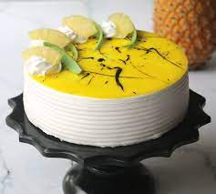

How to bake a delicious Pineapple-Cake?

Description:
Indulge in the tropical delight of a moist pineapple cake infused with sweet, tangy
pineapple bits, and a luscious cream cheese frosting. A slice of paradise on your plate!
Savor the perfect balance of tropical sweetness and creamy decadence in every bite of
our irresistible pineapple cake.
Ingredients:
- Flour and Sugar
- Pineapple
- Butter and oil
- Eggs
- Baking Soda and salt
- Cream cheese
- Vanilla (optional)
Steps for baking:
- Preheat oven to 350°F (175°C), grease and flour two 9-inch round cake pans.
- Cream butter, sugar, and oil. Add eggs, vanilla, and pineapple.
- Mix in dry ingredients gradually.
- Divide batter between pans, bake for 25-30 mins, and cool.
- For frosting, beat cream cheese, butter, sugar, and vanilla until smooth.
- Frost cooled cakes and enjoy!